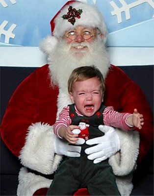

1. Make sure you don't have to deal with a freaked out 😭 kid!!!

When you take a new baby to go see Santa, a good rule of thumb is to bring something the child absolutly adores so it keeps there
mind occupied. A funny face and a sweet treat can definetly help, but in the long run a little planning and organization go a long way to
making a little person feel secure with an absolute stanger holding them 😉 if even for a minute.
2.Make Sure On That Special Day She Doesn't Have to Get Up Early And Make Breakfast🥞!
Just like the title says, MAKE SURE SHE DOESN"T HAVE TO GEAT UP X-MAS MORNING AND MAKE BREAKFAST FOR EVERYONE!!!
Thats the kinda of thing that can make a partner angry especially if they have been making breakfast on that day for
every year for awhile, yeah 😶 can get aggravating I'm told🙄.Oh last tip before moving on DO NOT act like you suddenly lost your hearing for no reason.🤣
I have included a link to 25 Wonderful Breakast 🧇 Ideas Enjoy!